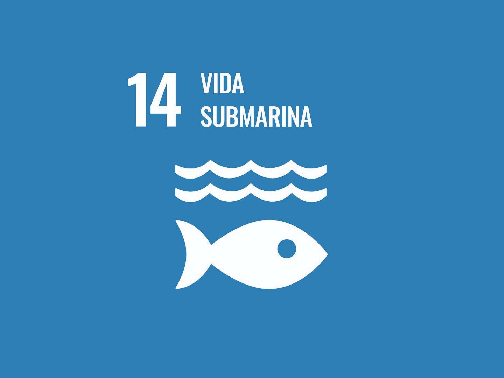

El Objetivo de Desarrollo Sostenible 14 forma parte de la Agenda 2030 de Naciones Unidas y se centra en la protección de los ecosistemas marinos, la reducción de la contaminación oceánica y la gestión sostenible de la pesca.

Las actividades humanas están dañando a los cuerpos de agua y al planeta en general, mediante el mal uso de desechos plásticos, provocando pérdida de especies, alteración, destrucción de hábitats y contaminación/alteración en la cadena alimenticia y economía.
Contaminación anual: Cada año llegan entre 5 y 12 millones de toneladas de plástico a los océanos (el equivalente a un camión de basura por minuto).
Afectación a la fauna: Más de 270 especies marinas sufren por enredos y más de 240 especies ingieren plásticos, afectando la cadena alimenticia.
Pérdidas económicas: Los daños a la pesca, el turismo y la navegación superan los 13.000 millones de dólares anuales.
La contaminación de nuestros océanos nos afecta a todos y ningún sector puede resolverla en solitario. La salud de nuestro planeta depende de nuestra capacidad de actuar en equipo: si el problema es global, nuestra respuesta debe ser colectiva. Unirnos para proteger el agua, las especies y nuestra economía es una necesidad urgente de supervivencia.
Crear una página web o aplicación informativa que brinde a los usuarios datos verificados sobre esta problemática. El contenido incluirá:
Estos datos serán reportados por los propios usuarios, generando alertas y contribuyendo a la actualización del mapa.